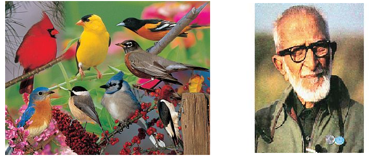
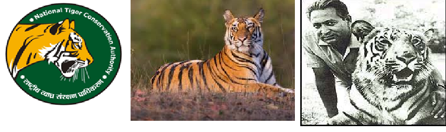

SAVIOURS AND CRUSADERS
While the forest may seem lonely dark and deep... There are some champions who have
dedicated their life to ensuring that the population of the endangered species does
not deplete to extinction.

Sálim Moizuddin Abdul Ali – The Birdman of India
Projects
•The first ornithologist to conduct a systematic survey on birds across India and write his landmark book
The Book of India Birds'.
•An important part of the Bombay Natural History Society
•Founder of the Bharatpur Bird Sanctuary(Keoladeo national Park)
Awards
•Padma Bhushan 1958
•Padma Vibhushan 1976

Kailash Sankhala – The Tiger Man of India
Projects
•Director and founder of the 'Project Tiger',the first ever attempt at tiger conservation,
anti poaching and hunting.
•He was the Director of Delhi Zoological Park and Chief Wildlife Warden of Rajasthan.
Awards
•Padma Shri in 1992
•Rahasthan Ratan 2013
Raza Tehsin
Project
•First to report 14 species like Flying Squirrel, Mouse Deer, Snow Trout Fish, Albino
Common Mongoose, Rusty Spotted Spotted cat, Albino Squirrel, Lesser Flamingos, Baikal
teal, Three Toed kingfisher, White Bellied Miniwit, White Eared Bulbul, Green Heron,
Flat Worm and Bittern Bird in Southwestern Rajasthan, India.
•Spearhead campaigns like protection of a 400 year old Kalp Vriksh( adinsonia Digitata)
•He was one of the early naturalists of India to study the effect of solar eclipse on fauna
Awards:
•Executive Member, Udaipur Chapter of WWF, Udaipur
•His articles and research have appeared in Books like Environmental Studies book of NCERT
References:
https://en.wikipedia.org/wiki/Kailash_Sankhala
https://www.telegraphindia.com/india/on-international-tiger-day-discovery-tells-the-story-of-indias-tiger-man/cid/1695385
https://arefatehsin.com/raza-h-tehsin/
https://peoplepill.com/people/valmik-thapar/
https://en.wikipedia.org/wiki/Valmik_Thapar